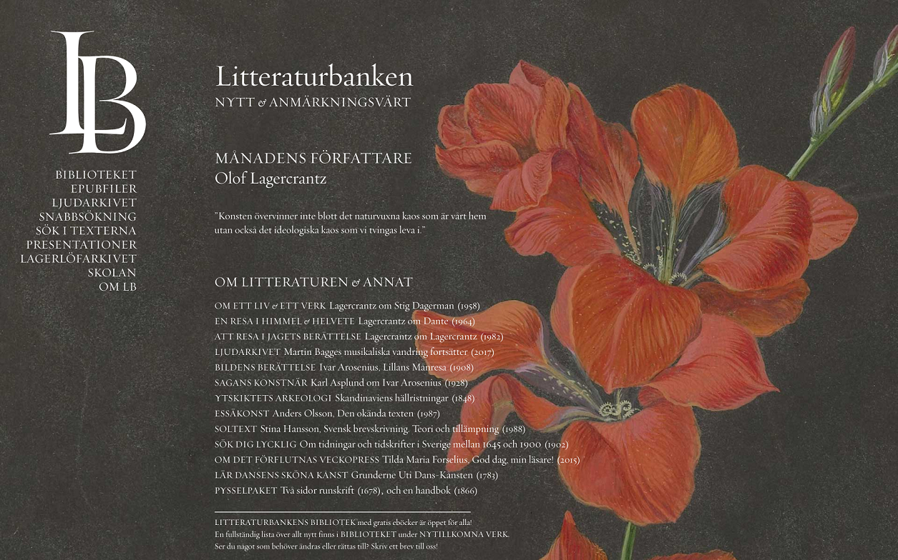
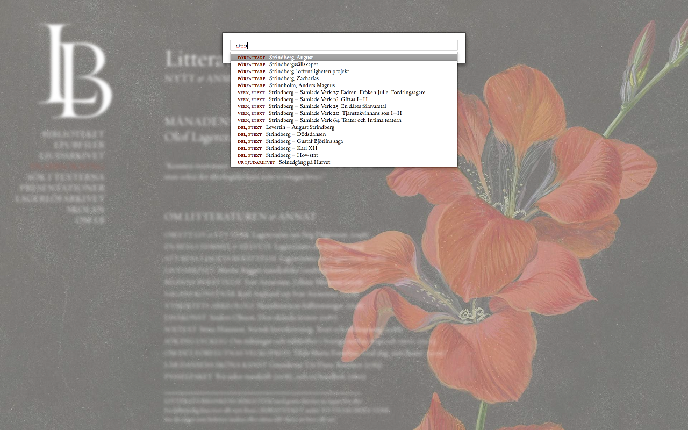
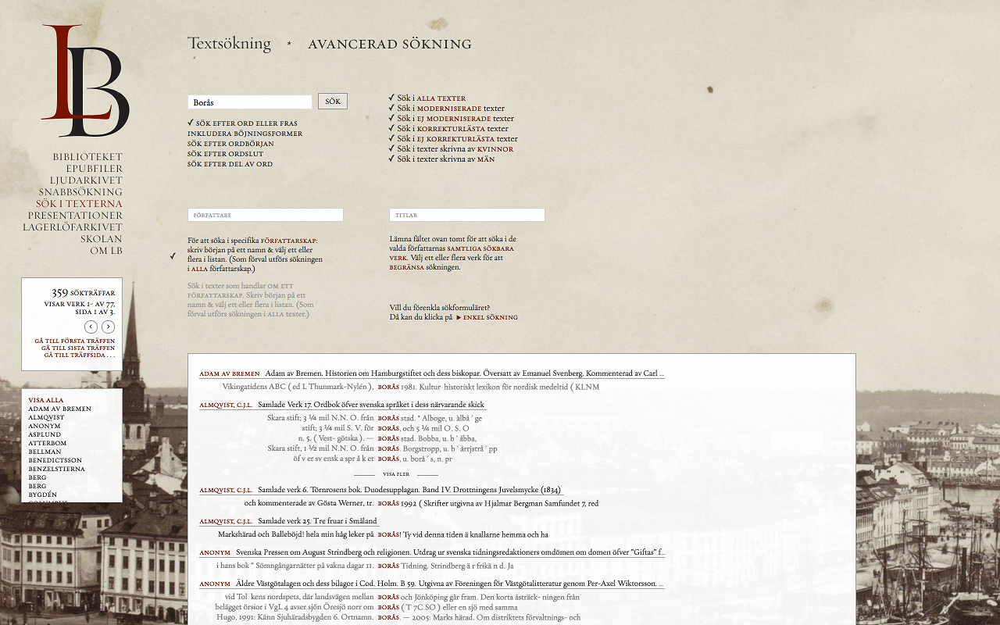
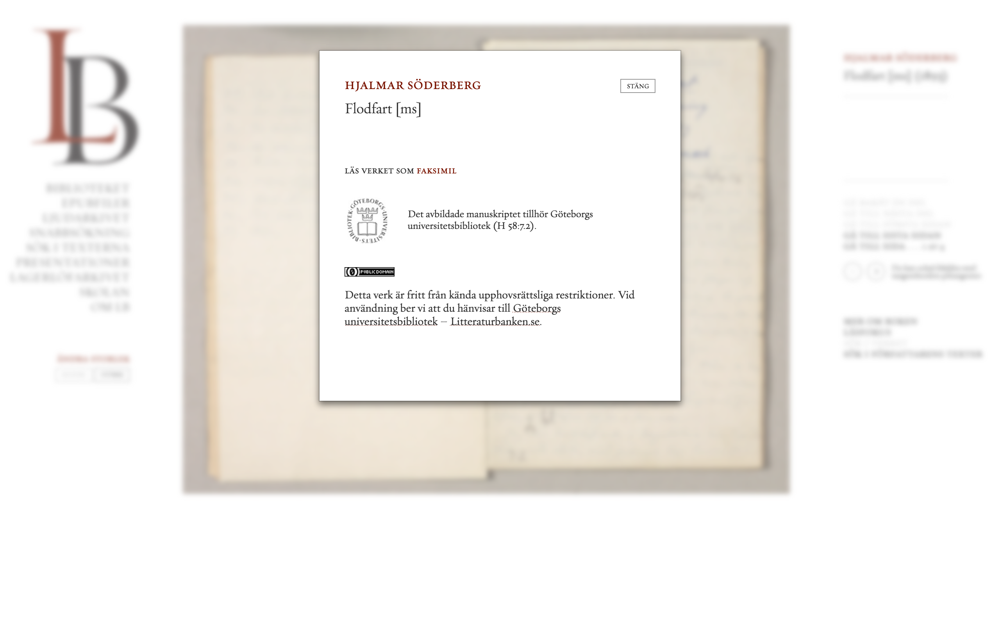
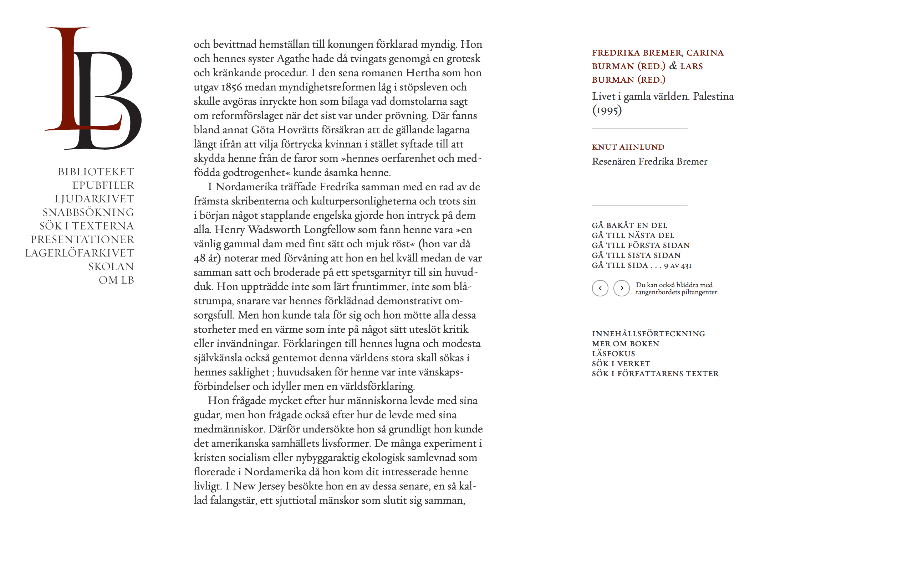
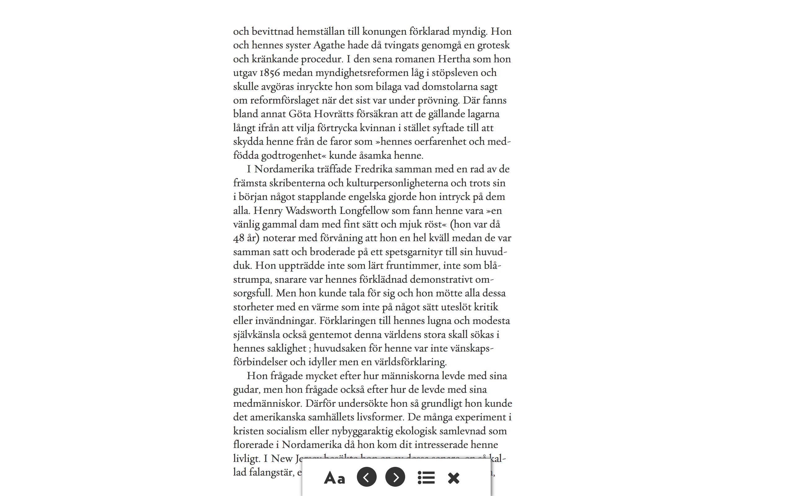
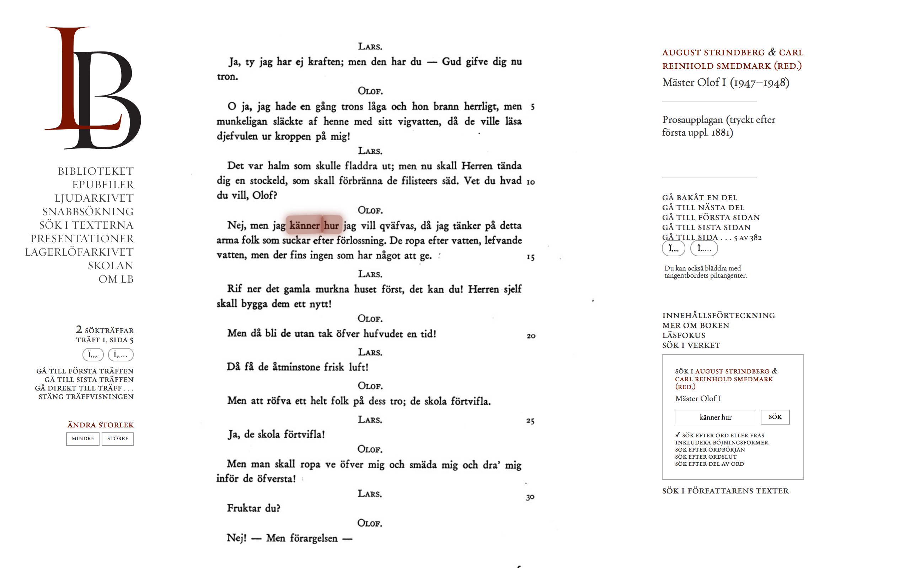
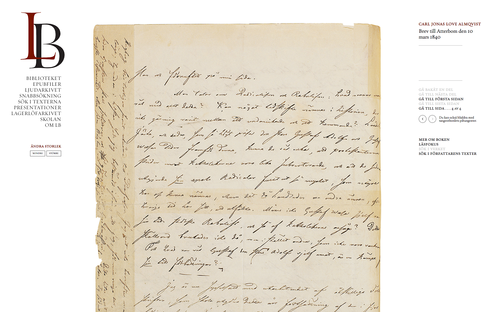

Litteraturbanken
Table of Contents
Abstract
Litteraturbanken (The Swedish Literature Bank) is a freely available digital collection of Swedish literary works, ranging from medieval to contemporary literature. It is the result of a cooperation between literary and linguistic scholars, research libraries, and editorial societies and academies. The collection consists not only of digital facsimiles, but of ocr'ed, proof-checked and TEI-encoded transcriptions as well, including EPUB and HTML versions of texts, and in addition scholarly presentations and didactic introductions to works and authors in the collection. It is also being used as a publishing platform for ongoing Swedish scholarly editing projects. Litteraturbanken currently comprises more than 2.000 works, mounting up to more than 100 million of machine-readable words. Litteraturbanken's main weak spot is transparency; it does not openly provide satisfactory ways to ensure the editors accountability for the edited texts and images. As a whole, however, Litteraturbanken is an impressive endeavour and paves the way for fruitful cooperation and massive data exchange with e.g. computational linguistics and bibliographic databases.
This review evaluates Litteraturbanken (in English: the Swedish Literature Bank; http://litteraturbanken.se) – a digital text collection of Swedish literary works.1 The review builds to some extent on an earlier evaluation report by Mats Dahlström and Johan Eklund, commissioned by Litteraturbanken in 2011 (Dahlström and Eklund 2011), but primarily takes stock of Litteraturbanken’s more recent developments, with respect to its contents, interface, and advanced functionalities.2
General Parameters
Litteraturbanken is an organization that aims to make the most important works of Swedish literature freely accessible to the general public through its website, litteraturbanken.se. It is gradually being recognized as the most prominent collection of digitized literary works in Sweden, and is the result of a co-operation between the Swedish Academy; the Swedish National Library; the Royal Swedish Academy of Letters, History and Antiquities; Språkbanken (the Swedish Language Bank of the University of Gothenburg); SVS (Svenska Vitterhetssamfundet, translated as the Swedish Society for Belles-Lettres in English); and the Society of Swedish Literature in Finland. This composition is also reflected in the Bank’s board, which includes members of each of these institutions.3
Discussions on the possibility of developing Litteraturbanken started in April 2002, when the Swedish Academy hosted a seminar on the digital storage of literary works. At this meeting of representatives of various libraries, universities and literary societies and associations, the benefits of such a digital collection of Swedish literature were widely acknowledged, leading the Academy to initiate an official investigation of the matter, which in turn led to the successful application for a two-year pilot project (2004-2005) financed by the Swedish Foundation for Humanities and Social Sciences. In 2006, when this project was finished, Litteraturbanken took its present form as a non-profit organisation,4 the development of which was funded by the Swedish Academy. Since 2009, the Royal Swedish Academy of Letters, History and Antiquities, the National Library, and SVS have supported Litteraturbanken as well by making resources and materials available.
As a Swedish enterprise, backed by Swedish (or Swedish language) institutions, collecting a corpus of Swedish language texts, it is not surprising that litteraturbanken.se is almost exclusively written in Swedish as well. Where the website includes lengthy and informative discussions of the general parameters in Swedish,5 this information remains difficult to access to people who do not read the language. To find a short, summarizing introduction to Litteraturbanken in English, the user needs to navigate to a Swedish language menu item (‘om LB,’ which translates as ‘about Litteraturbanken’), and then to a sub-level menu item called ‘In English’.
This is all quite understandable given Litteraturbanken’s national context and the language of its corpus. A person who cannot even find the English introduction would be hard pressed to make good use of the text collection in the first place.6 But still, there is a practical concern here too. At present, including more English in a collection’s interface is also a sure-fire way of improving its outreach. The Norwegian eMunch project for example noticed a considerable increase in their international website traffic when its interface extended its official languages to English and French – despite the fact that practically all of the content in its corpus is in Norwegian.7 For Litteraturbanken, such a strategy could become especially pertinent if the aim is to also include translations of Swedish literature in the future – which is one of the goals mentioned on its English introduction page.
Goals
Litteraturbanken’s mission, as stated on the website,8 is to collect and digitize fiction and other works that are important in the humanities, and to make these materials available in a user-friendly way. As such, it allows the user to read and search text, to download (and print out) PDF files, and to view facsimile images of books and manuscripts that would otherwise have been difficult to access.9 The specific goal here is to develop litteraturbanken.se into a website that holds the most important Swedish literature. But rather than only representing a national corpus, it seems to have taken on the challenge of extending the canon as well. Exactly how the texts that make up this corpus are selected will be discussed in more detail below (see: ‘Content’).
But Litteraturbanken aims to be more than a mere archive of texts. Navigating through the website it becomes clear that it also wants to function as a resource for research and education;10 to develop and disseminate technology and competences; to serve as an archive and publishing platform for Swedish scholarly editions; and to make obscure or hard-to-access materials available that the staff deems to be culturally significant.11 This way, it tries to be a resource for everyone: for researchers, for teachers, for students, as well as for a heterogeneous public that is just interested in (Swedish) literature in general.
This extensively comprehensive approach is certainly a strength: acknowledging the fact that its source materials have many different qualities and may serve many different purposes, a lot of time and effort is put into making sure that they cater to the widest possible audience. As we will explore further down in this review, however, this qualitative ambition will sometimes clash with Litteraturbanken’s quantitative ambitions – the diversity of its content and functionalities sometimes makes it difficult to fully grasp its aims and scope.
This is also what makes it difficult to put a label on Litteraturbanken. If we use Ulrike Henny and Frederike Neuber’s definition of the term, Litteraturbanken may be regarded as a digital text collection: indeed, it is undoubtedly a ‘digital resourc[e] that involve[s] the collection, structuring and enrichment of textual data’ (Henny and Neuber 2017). But of course, as they acknowledge in their “Preliminary Remarks,” this definition is meant to be a generic term that comprises a number of different types of collections like corpora, archives, libraries, repositories, databases, etc. If we take a look at the way Litteraturbanken self-identifies instead, we find terms like resource (‘resurs’)12 and storage place (‘lagringsplats’); in other words, Litteraturbanken is presented as a place where digitized versions of literary works are deposited for safekeeping and consultation.
This could also explain why Litteraturbanken calls itself a ‘bank’ for Swedish literature: there is a certain analogy with safes and safety deposit boxes to be found here. And with insurance policies too, as Litteraturbanken tries to ensure the long term sustainability of its literary canon. But still, a bank is usually a more interactive space: not just for deposits, but for withdrawals, loans and exchange as well. And as we will argue further down in this review, the interactive aspect of Litteraturbanken still leaves much to be desired. So at this point in time at least, perhaps The Literature ‘Trust’ would be a more appropriate translation than The Literature ‘Bank’ – especially also since deposits to the ‘Bank’ can only be made by vetted trustees at the moment.13
Litteraturbanken in Context
As a national collection of high-quality digitized classical literary works, Litteraturbanken has several Northern European counterparts, some of which served as inspiration during the conception phase (Svedjedal 2003, 24), such as the Danish Arkiv for Dansk Litteratur (ADL), the Deutsches Textarchiv, the Norwegian Bokselskap and the Swedish Projekt Runeberg. Further Nordic projects with a similar scope are planned or being launched, such as the Klassikerbiblioteket at the university of Helsinki.14
By and large, these collections share ambition and comprehensiveness with Litteraturbanken.15 ADL for instance houses classical Danish works that are out of copyright, based on scholarly edited transcriptions, and made available as both HTML and as digital facsimiles. Similar to Litteraturbanken, ADL is a cooperation between literary scholars, editorial societies and academies, and the National Library. Bokselskap is even more similar to Litteraturbanken in terms of partners, literary scope, degree of textual accuracy, introductory texts and other ancillary materials, type and degree of markup, and publishing formats.
There are marked differences as well. ADL has a much smaller collection and is not as technically sophisticated. Bokselskap has a more heterogeneous collection than Litteraturbanken – both in scope and technology – and could be said to be a bit more open in the sense that it is based on a blog platform, and makes available all its encoding principles (including sample TEI files), a publishing plan for the upcoming years, a facility to download entire works in different formats, and presentations of the project in several languages.
Projekt Runeberg however differs in some important respects: a collection of digitized, machine-readable Nordic classical works launched already in 1992, this is a bottom-up community project based on voluntary work, where Litteraturbanken and the other projects mentioned above are top-down, expert-based, and professional. There is in fact a considerable number of voluntary crowd-based projects online, devoted to scanning printed editions of classical works and transcribing them using OCR. Given the ease with which this can be done, we can expect such work to continue or even increase in the future. Largely, however, these are plain image and text collections with minimised metadata, sporadic proof-reading (at best), little or no descriptive markup, and with little or no ancillary scholarly material. Between crowd-based projects on the one hand and generalized mass-digitization projects à la Google Books on the other, activities such as Litteraturbanken have found a niche as a collection with high quality facsimiles, carefully proof-read OCR transcriptions, rich metadata, advanced search and a scholarly subject expertise in e.g. literary studies, book history and textual criticism.
Content
Not as exhaustive in scope as the National Library of Norway’s Digital Library programme,16 Litteraturbanken does not aim to be the publisher and storage space for all Swedish literature. In the first place, Litteraturbanken wants to make the canon of Swedish literature accessible to the general public, but also to include a range of lesser known Swedish literary authors. In general, Litteraturbanken distinguishes between five different foci that help determine the selection of its materials: 1) central authors and editions; 2) thematic or genre specific collections of works; 3) individual works of significance; 4) historically significant Swedish translations of works in other languages; and 5) relevant modern non-fiction literature such as reference works.
In the ‘central authors and editions’ (1) section, we are presented with a majority of the works of the most renowned Swedish authors, often based on scholarly editions. The list of authors included is comprehensive, certainly up to the early 20th century, from which point onwards a smaller (but steadily increasing) selection of later authorships is represented, for reasons of copyright. Litteraturbanken emphasises that the selection of works is not made on the basis of an existing list of canonical authors or works, but that instead its corpus is expanded through a constant process of renegotiation where both tradition and regeneration play a principal role. From the start it was made clear that Litteraturbanken would become the home of at least two large-scale scholarly editing projects: those of the complete works of both August Strindberg and Carl Jonas Love Almqvist. And through collaborations with the Swedish Society for Belles-Lettres 17 and a number of editorial and other scholarly projects18 these efforts are now extended to include the works of a wide range of canonical authors. Interestingly, this means that Litteraturbanken has gradually become the de facto digital publishing and archiving platform for the major Swedish scholarly editing projects – ongoing as well as finished ones.
This section is different from Litteraturbanken’s self-proclaimed focus on ‘individual works of significance’ (3), where it aims to add a number of works to its collection that are not quite so well-known or critically acclaimed – but that nevertheless had a significant impact on, or signify a good representation of, the literature of the time.19 Rather than expanding the literary canon, this focus area instead aims to expand our understanding of the context in which more canonical works of literature could blossom. And more of such context is provided in Litteraturbanken’s last two sections that include important literary translations (4), and reference works (5).
While these goals and selection criteria are all elaborately explained and illustrated in Litteraturbanken’s ‘about’ page, it is more difficult to see how they are put into practice in the corpus – and navigable through the Graphic User Interface (GUI). Browsing the website, it seems that at the moment many of these groupings are still underdeveloped and not yet visible enough. A good example here is Litteraturbanken’s focus on thematic and genre related collections (2). To find a collection of texts within a specific genre, the user needs to navigate to the Litteraturskolan, where texts are grouped together as being either prose or poetry.20 And deep inside Litteraturbanken’s Selma Lagerlöf Archive (‘Lagerlöfarkivet’), the user can find a presentation of different themes that are present in Lagerlöf’s works. But these are all hard to find, and not living up to their full potential. A simple faceted genre classification should be relatively easy to accommodate in the metadata,21 which in turn would make the construction of clearer browsing pathways or genre based advanced search options feasible. This problem relates to some of the usability issues that will be discussed below. At this point, it suffices to say that these are the areas that Litteraturbanken is focusing on while it is still actively expanding its corpus, even if this is not always as clearly visible as such in its design.
More concretely, the reader of this review may be curious to know how large this corpus actually is. During the first few years of its existence online, the pace with which works were added to Litteraturbanken was quite modest, but once robust procedures and workflows were set in place from around 2010 onwards, Litteraturbanken’s publishing has acquired considerable momentum. Given this, chances are that the collection will have grown considerably by the time you are reading this review. Still, as a point of reference, at the moment of writing22 its collection counted 2143 works written by a total of 1326 different authors. These works are made available as online readable e-texts (217.754 pages), digital facsimiles (363.684 pages), and EPUBs (844 files). Combined, these works counted an impressive 117.425.313 words. And in addition to this corpus of literary texts, Litteraturbanken also includes a number of peripheral materials that were mentioned earlier, such as relevant papers and presentations, materials prepared for students, pupils and teachers (including a Swedish lexicon for literary terms), and a sound archive of texts that are read out loud by Swedish celebrities (these are also made available in the form of an iTunes podcast).23 In other words, Litteraturbanken offers its materials in a wide range of formats, and individual items in the corpus are often (but not always) published in more than one of these.
Usability
This brings us to the discussion of the way in which the user may interact with the materials that Litteraturbanken has to offer. In this regard, it may be interesting to note that the initial project was created on the basis of an actual user need rather than a more general academic interest. In addition to the affiliated members that were mentioned in our introduction, Litteraturbanken’s board also includes Swedish author Sven Lindqvist, who is credited with the idea behind the project. Missing ready access to Swedish literature on his travels, Lindqvist reportedly provided the Swedish Academy with the incentive to hold the aforementioned seminar that would get the project off the ground in 2002. On the one hand, this would suggest that Litteraturbanken has a strong incentive to put a lot of effort into usability and design issues. On the other hand, it may also explain why more advanced analytical and interactive functionalities are not yet fully developed at the moment (as will be more elaborately discussed below). In the terms of Krista Stinne Greven Rasmussen’s recent typology of reader roles for scholarly editions, the graphical user interface of Litteraturbanken will cater to an audience of readers, rather than to one of users – let alone co-workers (Rasmussen 2016, 127).
Browsing the Archive



Rights and Reuse

Reading the (e-)Texts or Facsimiles
 
Almost as an easter-egg feature for the e-texts, the user can also look up the meaning of individual words in the text in SAOB, the Svenska Akademins Ordbok (i.e. the Swedish equivalent of the Oxford English Dictionary) by double-clicking on that word.38


To conclude we can say that – given the inevitable copyright issues involved when dealing with relatively young materials – Litteraturbanken provides an impressive (and still growing) collection of Swedish texts that are presented in a slick interface that provides a pleasant reading experience (especially in the case of the e-texts). But at the same time we find the interface lacking when it comes to the integration of and communication between Litteraturbanken’s many different aspects. In each view, simple links to related documents and views (e-texts, facsimiles, EPUBs,43 PDFs, Litteraturskolan, or Litteraturbanken’s scholarly essays on particular works or authors etc.) would already make a great difference. This is another example of where Litteraturbanken’s quantitative aspirations clash with its qualitative aspirations: in the choice to let each of these aspects develop on their own as individual projects for a quick quantitative growth of qualitative materials, some of the Litteraturbanken’s potential as a whole (e.g. as linked data) remains untapped. Less urgently, perhaps, it is also a pity that Litteraturbanken does not make more use of web 2.0 features:44 the user cannot edit, contribute, comment, or annotate any of the texts in the collection, nor can she download TEI files (see ‘Methods’) for editing and re-use. With the addition of such features and the development of an API, for instance, Litteraturbanken could truly fulfil its aim to be a ‘bank’: allowing for its data to be used and reused by external projects through aggregation, e.g. by building new and better visualization tools for the data. It is not hard to imagine such services emerging as coral reefs in symbiosis with litteraturbanken.se. To reach its full potential, we believe it should be possible to easily export data from and import data into Litteraturbanken.45
Methods
In the preceding section, we had a look at some usability features of litteraturbanken.se and concluded that it offers a variety of formats and view modes in an aesthetically pleasing interface. But how are these views and formats actually produced? In this section, we will take a peek behind the scenes and look at workflows and methods. The information in this chapter on Methods draws partly on the research that Mats Dahlström and Johan Eklund conducted in 2011 as part of their evaluation of the project in Swedish, but has been supplemented during subsequent updates and communication with staff of Litteraturbanken. In particular, private email communication with the staff during this review study supplied additional information while also confirming that the workflow is still in place.46
Workflow
The workflow of Litteraturbanken is pretty straightforward. Once an adequate physical copy for a selected work has been chosen as a source (see ‘Contents’), it is subjected to image capture through scanning or photographing. The image files are then run through a transcription process, either by using OCR or by transcribing the text manually. The transcription text is subjected to careful proofreading and then imported into a database and encoded in TEI-XML, from which presentation files in HTML (i.e. the e-text) or EPUB are generated using XSL pre-transformation. In addition, some of the image files are published as digital facsimiles, and Litteraturbanken also publishes some material as PDF files (with searchable OCR’ed text; so-called image front transcriptions). Finally, litteraturbanken.se is also being used as a publishing and archiving platform for smaller collections digitized and encoded elsewhere, in particular from ongoing Swedish scholarly editing projects.
To many of the authorships, works and to some extent genres, Litteraturbanken also writes or commissions expert introductions, comments and didactic resources. As for selecting the primary source (or copy-text) to digitize and edit, the main principle is to choose a copy from the first printed edition, and not to modernize the spelling. Further, the aim is to have the transcription replicate the graphic form of the source as much as possible, thus preserving line breaks, margins, initials, blank pages etc. However, some source document’s paratextual elements like blurbs are discarded.
Essentially, this workflow is similar to the way in which the average digital scholarly edition operates – and thus probably quite familiar to the RIDE reader. It is also akin to the production principles of most digital collections housed by memory institutions and universities, although Litteraturbanken is considerably more text-oriented (where the standard digital collection of classical works produced by a library is more image-oriented), both for the production and the publication of its materials.
Image Capture
As for image capture, Litteraturbanken mainly commissions digital facsimiles from the major Swedish research libraries, in particular the University Library in Gothenburg and the National Library in Stockholm. Efforts are made to set uniform quality level benchmarks with the libraries. The image quality is very high, and the commissioned materials are delivered in several versions varying in resolution and size. These versions are published on the website as facsimiles, and enable users to zoom in on the object (not dynamically, but by selecting one of several predefined versions). For the facsimiles, Litteraturbanken provides information about the specific physical copy that was used as source for the digital reproduction, along with full bibliographical information and library shelfmark.
The Litteraturbanken staff also performs in-house image capture. These internally produced image files (usually scans) are of lower quality than the commissioned images and are primarily used for pre-publication work, but rarely for direct publication together with the encoded transcriptions. Because of their lower quality they do not meet the quality requirements set by Litteraturbanken to be published as digital facsimiles. To an outsider, however, it would not seem a far stretch to either put these scans online anyway with a quality caveat, or to raise their quality level only slightly in order to be able to publish them as facsimiles – this would be of great value to the users, not in the least if Litteraturbanken would consider integrating a synoptic view where facsimiles and transcriptions are presented side by side,47 a feature so far missing in litteraturbanken.se.
Transcription, encoding and publishing
For a majority of the works, and in particular printed sources, text is captured using OCR, a process that is often outsourced to external partners. The transcription texts are then meticulously proof-read by the Litteraturbanken staff, most of them being literary, linguistic and textual scholars themselves with an expertise in the kind of literary works and genres favoured by Litteraturbanken. Given the editorial choice to let the final e-text reflect the source text both graphically and textually, special attention is paid in the transcription phase to cases where e.g. authorially intentional line breaks have been dismissed by the OCR software, or where the OCR dictionaries have modernized old spellings.48
Text encoding is performed in TEI.49 The markup is relatively fine-grained, certainly when compared to similar digital collections elsewhere (but about the same level as that of bokselskap). Each word occurrence is assigned a unique ID, and the metadata is extensive, with rich information about the encoding work, the source copy and its provenance, including a reference to the equivalent record in LIBRIS, the joint catalogue of the Swedish academic and research libraries.50 This part of the work is excellent, and lays the groundwork for various kinds of data transformation, export and aggregation possibilities. The encoding is a combination of machine-based (using genre or author specific templates) and manual encoding. The templates (called text ‘factories’) automatically mark up a selected section of text with genre specific pre-settings. This markup is then checked manually and edited extensively. According to staff this procedure works well, and requires only a few hours of manual work for the encoding of a novel of average length.51 Since the settings, principles and workflow routines are well documented and described in internal manuals, Litteraturbanken is in this sense well prepared for staff changes or for data export. As of yet, the TEI-XML files are only used for pre-publication work, i.e. as the basis for the HTML and EPUB formats that are published on the website. The XML files themselves are however not offered either as downloadable files or to be viewed in markup mode on the screen. Likewise, very little information about the editing and encoding principles is made available to the general public on litteraturbanken.se (and hard to find when it is). Since Litteraturbanken is gradually becoming the de facto publication forum for major scholarly editing projects, and since the documentation of such principles is one of the cornerstones of scholarly editing, this lack of transparent documentation must be considered a shortcoming.
Conclusion
To conclude, we can say that Litteraturbanken is an ambitious endeavour, whose principal goal to make the most important works of Swedish literature widely and freely available (accompanied by commissioned presentations and comments on authors and works by subject experts) can only be applauded. Having gained considerable momentum in its publishing pace, it is well on its way to reach this goal: an absolute majority of the canonical Swedish authorships and works in the public domain are now adequately represented in Litteraturbanken in the form of quality sealed versions, subjected to scholarly scrutiny. And each month that goes by, yet another important authorship seems to have been added to the corpus and presented to Litteraturbanken’s readers.
It is a well-networked enterprise that collaborates with other literary, linguistic, and editorial projects across Sweden; and especially its extensive cooperation with Språkbanken has paved the way for a high degree of competence with regard to computational linguistics, database and corpora work, and a high standard for deep encoding.52 The transcriptions are meticulously proof-read, and rendered with a high level of concern for textual and graphical authenticity with regard to the source documents. To accomplish this (and to maintain the high level of quality for the published facsimiles as well), Litteraturbanken has an extensive array of in-house documentation detailing their well established routines for the project’s workflow, encoding standards, publication practices, (sub-)versioning and backups with regular log data collections etc. In short, Litteraturbanken is a well-oiled machine that provides a large and qualitative collection of Swedish texts.
As we see it, however, the project’s main problem is that it tries to do too many things at once to be able to do all of them right. Of course, since it is still under development it would be unfair to treat it as a finished project, and we are confident that many of our concerns will be addressed in the near future. Still, as it stands at the moment of writing, by attempting to satisfy its qualitative and quantitative needs simultaneously, Litteraturbanken does not fully meet one of the field’s most fundamental requirements: providing ways to ensure the editors’ accountability for the edited texts (and images) that it has to offer.53 This is an issue that could be remedied by, for instance, making a detailed general account of editorial methods, principles and digitization practices more readily available; by providing more tools for textual scholars to compare the edited texts to their original source materials; and by allowing researchers to read or download individual TEI-XML files. Due to the high quality of the rigorous editorial work and the well-considered construction of the infrastructure and workflows, most of this documentation is already present inside of Litteraturbanken, even if it is not yet made available to the users. If only the team would take this one step further, they could transform what is already an impressive, vast, open access collection of high quality digital texts into the genuine digital scholarly editing platform it seems to aspire to become.
Bibliography
- Dahlström, Mats and Johan Eklund. 2011. Litteraturbanken: utvärderingsrapport. (Unpublished). 78 p. Borås.
- Dillen, Wout and Vincent Neyt. 2016. ‘Digital Scholarly Editing Within the Boundaries of Copyright Restrictions’. Digital Scholarship in the Humanities 31 (4): 785-796.
- Henny, Ulrike & Frederike Neuber. 2017. ‘Criteria for Reviewing Digital Text Collections, version 1.0.’ Köln: Institut für Dokumentologie und Editorik. https://web.archive.org/web/20170727080330/http://www.i-d-e.de/criteria-text-collections-version-1-0/.
- Malm, Mats. 2010. Fasta och flyktiga texter: Litteraturbankens digitala tillgångar. Stockholm: Svenska Vitterhetssamfundet.
- Ore, Espen. 2015. ‘A Nordic Tradition for Digital Scholarly Editions?’ Journal of the Japanese Association for Digital Humanities 1 (1): 58-67.
- Rasmussen, Krista Stinne Greve. 2016. ‘Reading or Using a Digital Edition? Reader Roles in Scholarly Editions’. In Digital Scholarly Editing: Theories and Practices, edited by Matthew J. Driscoll and Elena Pierazzo, 119–33. Cambridge: Open Book Publishers.
- Robinson, Peter. 2013. ‘Five desiderata for scholarly editions in digital form’. Paper presented at ‘Digital Humanities 2013’, University of Lincoln, Nebraska, July 16–19, 2013. https://web.archive.org/web/20170727080500/http://dh2013.unl.edu/abstracts/ab-314.html.
- Sahle, Patrick. 2016. ‘What Is a Scholarly Digital Edition?’ In Digital Scholarly Editing: Theories and Practices, edited by Elena Pierazzo and Matthew J. Driscoll, 19–40. Cambridge: Open Book Publishers.
- Svedjedal, Johan. 2003. En svensk Litteraturbank? Stockholm: The Swedish Academy. Accessed July 27 2017. http://litteraturbanken.se/red/om/ide/Litteraturbanken.pdf.
Notes
- The authors’ initial research leading up to this publication was conducted as part of the DiXiT Network, a Marie Curie ITN which has received funding from the People Programme (Marie Skłodowska-Curie Actions) of the European Union's Seventh Framework Programme (FP7/2007-2013) under REA grant agreement n°317436. ↑
- Thanks are due to Mats Malm, Cai Alfredsson and Dick Claésson from Litteraturbanken and to Hilde Bøe from the Norwegian eMunch project for taking the time to answer various questions that came up during the study. ↑
- Litteraturbanken’s board exists of: Gunnel Engwall (President; Stockholm University and The Royal Swedish Academy of Letters, History and Antiquities ), Lars Borin (University of Gothenburg), Sara Danius ( Swedish Academy ), Pia Forssell (the Society of Swedish Literature in Finland ), Ingrid Svensson (the National Library), Johan Svedjedal (Uppsala University and SVS ), and Sven Lindqvist (a Swedish author). Litteraturbanken is directed by Mats Malm of the University of Gothenburg, and its editorial staff includes Cai Alfredson, Dick Claésson, Paulina Helgeson, Anja Hellström, Carl-Johan Lind, Ellen Mattson, Ljubica Miočević, Therese Röök, and Ilaria Tedde. ↑
- As such, Litteraturbanken differs from initiatives similar in scope but with different publication models, such as private-public partnerships and resources funded by subscription or advertisements. ↑
- I.e. an introduction to the academics and institutions that are involved; its history and financial resources; a clear account of how the texts in the corpus are to be selected; detailed descriptions to help the user manoeuvre Litteraturbanken’s many different types of content and functionalities; etc. ↑
- Not to mention the irony that comes into play when English speakers complain when not everything is written or translated into their own language – thus perpetuating the use of English as a lingua franca. ↑
- Based on a personal IM communication on May 5 2017 between Mats Dahlström and Hilde Bøe, head of the eMunch project. ↑
- http://litteraturbanken.se/#!/om/ide. ↑
- In addition, the website also hosts a number of secondary materials on both Litteraturbanken itself and on the works in the corpus – such as in-depth reviews and presentations on authorships and related subject areas. ↑
- A whole section of litteraturbanken.se is devoted to its ‘school’ – a platform aimed at students and teachers at both secondary school and university levels (see: http://litteraturbanken.se/skola ). ↑
- Rather than summarized in a list as they are presented here, these diverse points of interest are mentioned individually in various places across Litteraturbanken’s introductory pages, and (to some extent) become apparent browsing the project’s catalogue and content types. ↑
- On the website, however, this term usually relates to individual objects in the collection. ↑
- The name Litteraturbanken also contains a reference to the computational linguistics resource Språkbanken, hosted by the University of Gothenburg. Språkbanken served as both model and partner for the Swedish Literature Bank already from the start (Malm, 2010, 4). As such, the name implies that Litteraturbanken aims to do for Swedish literature what Språkbanken does for Swedish linguistics. ↑
- ADL: https://web.archive.org/web/20170727081400/http://adl.dk/; Deutsches Textarchiv: https://web.archive.org/web/20170727081501/http://www.deutschestextarchiv.de/; Bokselskap: https://web.archive.org/web/20170727081639/http://www.bokselskap.no/; Projekt Runeberg: https://web.archive.org/web/20170727081717/http://runeberg.org/. Information about Klassikerbiblioteket can be found at: https://web.archive.org/web/20170727081747/https://oa.doria.fi/handle/10024/91449. ↑
- Indeed, the fact that these are produced and maintained at a national rather than regional or institutional level, is something Espen Ore (2015, 62) refers to as a possible ‘Nordic twist’ of digital text collections. ↑
- See: https://web.archive.org/web/20170727081842/http://www.nb.no/English/The-Digital-Library/What-is-being-digitized. ↑
- This society, presented at https://web.archive.org/web/20170727081932/https://svenskavitterhetssamfundet.wordpress.com/english/, is the major producer and publisher of printed scholarly editions of classical, post-Reformation Swedish authors. ↑
- E.g. the ongoing scholarly edition of Selma Lagerlöf’s collected works. Note that the ADL and Bokselskap collections (see ‘Litteraturbanken in Context’) work with similar arrangements. ↑
- ‘För varje August Strindberg går det, enkelt uttryckt, ett stort antal John Personne,’ Litteraturbanken’s ‘about’ section reads. John Personne was a Swedish author who criticized Strindberg’s work, but whose own works did not yield any critical acclaim. In other words, this quote suggests that for every important author there are a great number of second-rate authors. Arguably, such authors (and their works and criticisms) may provide crucial insights for contextualizing the more canonical authors in Litteraturbanken’s corpus. ↑
- On the ‘about’ page, Litteraturbanken boasts that there will soon (2017–2018) also be a section for drama texts available. ↑
- Behind the scenes, there is already the beginning of such a classification in Litteraturbanken’s own database files. This was confirmed in an e-mail communication with staff, May 16 2017. ↑
- These figures were available at litteraturbanken.se on May 9 2017. For current data about the corpus’s current size (in Swedish), please visit: http://litteraturbanken.se/#!/om/statistik. This page also includes a list of the 30 works that are the most often read (counting the number of times the work’s e-text version was consulted online), and the 30 works of which the EPUB files were downloaded the most often. We suspect that the number of words presented on the website combines those of the e-texts with those in the EPUB files – not counting the (untranscribed) words written on the digital facsimile images, nor the OCR’d words in the text layer of the PDFs. ↑
- See: https://web.archive.org/web/20170727082110/https://itunes.apple.com/se/podcast/litteraturbankens-upplasningar/id1180639320?l=sv. ↑
- This includes all the audio files in the sound archive (‘ljudarkivet’), and any work used in Litteraturbanken’s school (‘litteraturskolan’). It does not, however, include the introductions etc. listed in the website’s presentationer section. ↑
- It is not possible to refine the search results by (de)selecting the audio files mentioned in the previous note. Instead, these are always included in the search results. ↑
- Such a fixed search bar would indeed be difficult to integrate into the website, given that its layout changes considerably depending on the type of content the user is reading (see below). ↑
- These differences include 1) that snabbsökning has a dropdown autocomplete feature where biblioteket does not; and, more importantly, 2) that the search results of biblioteket seem to be more thorough than those of snabbsökning. It appears that the search engine behind the biblioteket search bar also takes section titles inside text-items into account, where the snabbsökning search bar does not. In our opinion, Litteraturbanken’s ideal search bar would combine features of both: the dropdown autocomplete function from snabbsökning, and the more thorough search (and refinement) settings from biblioteket. ↑
- For example by treating the biblioteket page purely as an index page; and/or by merging all the different search bars (biblioteket, snabbsökning, and sök i texterna) in a single search function. ↑
- E.g. the option to include or exclude modernised texts; to only search texts written by either female or male authors; to narrow down the search to one or more specific authors; or even to search within one or more specific works. ↑
- See: https://spraakbanken.gu.se/korp/, and click on ‘Litteraturbanken’ (top left) to select the corpus. In a private email communication (May 16 2017) Dick Claésson confirmed that this corpus is updated regularly. ↑
- Because Litteraturbanken includes a lot of different types of materials, many of which are still protected by copyright, a considerable portion of its materials is not allowed to leave the website (with the exception of the collaborations with Korp etc. for corpus analysis). For a full explanation of the different rights that pertain to different materials (in Swedish), see: http://litteraturbanken.se/om/rattigheter. In a private email communication (May 16 2017), however, Mats Malm confirmed that Litteraturbanken is working on solutions for making as much of its individual materials (that are not restricted by copyright) available for research use in the form of .txt files. ↑
- This default setting is explained on Litteraturbanken’s rättigheter (‘rights’) page: http://litteraturbanken.se/om/rattigheter. ↑
- The ‘non-commercial’ appendix to Creative Commons licenses has been heavily criticized for being too restrictive, considerably limiting the source’s potential for reusability (see for instance Robinson 2013). While this is true, we appreciate that such a CC BY-NC-SA license can already be difficult to obtain for works that are not yet in the public domain (see also Dillen and Neyt 2016). That is why we think Litteraturbanken’s flexible approach to licensing makes for a good compromise between accessibility and reusability. ↑
- The Swedish text clarifying the copyright license at the bottom of the copyright pop-up in Figure 4 can be translated as: ‘This work is free from known copyright restrictions. In case of use, we ask you to refer to Gothenburg University – Litteraturbanken.se’. It is unclear if the em-dash here means ‘and’ or ‘signed’ – but since authorship attribution is requested rather than required this makes no legal difference, and the (re)user may be encouraged to refer to both. ↑
- See: http://litteraturbanken.se/forfattare/BremerF/titlar/LivetIGamla/sida/9/etext. As this link already shows, another useful feature of both the e-text viewer and the facsimile viewer is that each single digitized page has its own unique breadcrumb URL – which offers a great help for navigation and citation. ↑
- The navigational options are gå bakåt en del (previous section); gå till nästa del (next section); gå till första sidan (first page); gå till sista sidan (last page); gå till sida… (move to page by number); or Innehållsförteckning (a linked table of contents). The user can also move to immediately preceding or following pages using the arrows in the sidebar, or (as explained alongside those arrows) the arrows on her keyboard. The search options are sök i verket (search the work), or sök i författarens texter (search the author’s works). The former option opens up a mini search bar on the same page; the latter option transports the user to the advanced search page. ↑
- The word limited really is key here: as may become even more clear when we discuss the facsimile view, Litteraturbanken goes to considerable length in controlling the visual display of its materials. In the case of the e-texts there are, for example, no options to change the text’s typeface, or to re-flow the text for optimising the screen real estate on the user’s side. Of course, these options may become accessible through the user’s EPUB reader – if copyright restrictions allow for the work to be published in this format in the first place. ↑
- More precisely, double-clicking any word in the e-text conjures up a looking-glass icon, which in turn conjures up a pop-up window (on click) that displays the entry in SAOB. The only place where the existence of this feature is hinted at is halfway through Litteraturbanken’s ‘help’ section – see http://litteraturbanken.se/om/hjalp, specifically its section ordböcker (‘dictionaries’) section. This seems too obscure a place to describe such a useful feature that the user is unlikely to stumble upon accidentally – or would be hard-pressed to replicate if she did. ↑
- See: http://litteraturbanken.se/forfattare/StrindbergA/titlar/MasterOlof1/sida/4/faksimil. The sök i verket option (bottom of the right sidebar) allows the user to find all of the query’s results (bottom of the left sidebar) and highlight the matches (red). ↑
- See: http://litteraturbanken.se/forfattare/AlmqvistCJL/titlar/BrevTillAtterbom10Mar1840/sida/4/faksimil. ↑
- For example by right-clicking on the image and selecting ‘Save Image’ (or an equivalent option); or by drag-and-dropping the image onto the user’s desktop. ↑
- Once inside a work, the user now has to leave the page, go to the introductory page for the work or the author, choose the different view (facsimile or e-text) and go down to the relevant page from there. This is of course cumbersome when a user wants to see what a particular text passage looked like in the facsimile of a manuscript or printed edition. Links between equivalent pages in both views, or (perhaps even better) a side-by-side view that integrates both the e-text and the facsimile image would go a long way to resolve this issue (see also ‘Methods’). ↑
- When an e-text also has an equivalent EPUB, a download link is provided – but only in the popup window that appears when the user clicks on the mer om boken link (right sidebar in fig. 5, 7 and 8). Since not all e-texts have equivalent EPUBS, we think it would make much more sense to provide a more striking Call-To-Action button with a download link in the sidebar whenever available. ↑
- Given the low degree of user interaction possibilities, the fact that the website is completely JavaScript dependent seems like an unnecessary technical requirement on the user(‘s browser) as well. ↑
- While we appreciate that the variety of copyright licenses may make it impossible for Litteraturbanken to make all of its data exportable, it should be possible to at least provide this option for those materials that are not subjected to those restrictions. ↑
- We are grateful that the Litteraturbanken staff was so helpful and generous in supplying this kind of information. Still, as we will come back to in our conclusion, more of this information should be readily made available on the website for the general public, since a better understanding of these practices would help the user understand and gauge the relation between the source documents and their digital surrogates on litteraturbanken.se. ↑
- Such synoptic views have become fashionable in many digital scholarly editions, e.g. the editions of the van Gogh correspondence (https://web.archive.org/web/20170727082400/http://vangoghletters.org/vg/); the works of Zacharias Topelius (https://web.archive.org/web/20170727082430/http://www.topelius.fi/); or the works of Grundtvig (https://web.archive.org/save/_embed/http://www.xn--grundtvigsvrker-7lb.dk/). ↑
- For instance, by using a dictionary an OCR engine may falsely correct the old spelling of the word försigtig (‘careful’) into the modern form försiktig. ↑
- In the strictest sense, the files do not follow TEI by the book. Thus, for instance, there is no root element <tei> declared, and there are instances of home-brewed elements. ↑
- See https://web.archive.org/web/20170727082633/http://libris.kb.se/. ↑
- E-mail communication with staff members of Litteraturbanken, May 16 2017. ↑
- Another example of the conscientiousness of Litteraturbanken’s collaboration is the fact that the file names and URLs for each page on litteraturbanken.se are linked to their respective records in LIBRIS (see ‘Methods’). ↑
- As Patrick Sahle recently argued in his contribution to Driscoll and Pierazzo’s Digital Scholarly Editing: Theories and practices: ‘[t]he most basic exigency in traditional editing – State your rules and follow them! – is as well the central law and starting point of all digital editing (Sahle 2016, 36; emphasis in original). ↑
@article{litteraturbanken,
author = {Dahlström, Mats and Dillen, Wout},
title = {Litteraturbanken},
journal = {RIDE – A review journal for digital editions and resources},
number = {6},
year = {2017},
doi = {10.18716/ride.a.6.2},
url = {https://doi.org/10.18716/ride.a.6.2},
}TY - JOUR
AU - Dahlström, Mats
AU - Dillen, Wout
TI - Litteraturbanken
T2 - RIDE – A review journal for digital editions and resources
IS - 6
PY - 2017
DA - 2017/09
DO - 10.18716/ride.a.6.2
UR - https://doi.org/10.18716/ride.a.6.2
PB - Institut für Dokumentologie und Editorik e.V.
LA - en
ER - Dahlström, M., & Dillen, W. (2017). Litteraturbanken. RIDE – A review journal for digital editions and resources, (6). https://doi.org/10.18716/ride.a.6.2Dahlström, Mats, and Wout Dillen. "Litteraturbanken." RIDE – A review journal for digital editions and resources, no. 6, 2017. https://doi.org/10.18716/ride.a.6.2.Dahlström, Mats, and Wout Dillen. "Litteraturbanken." RIDE – A review journal for digital editions and resources, no. 6 (2017). https://doi.org/10.18716/ride.a.6.2.